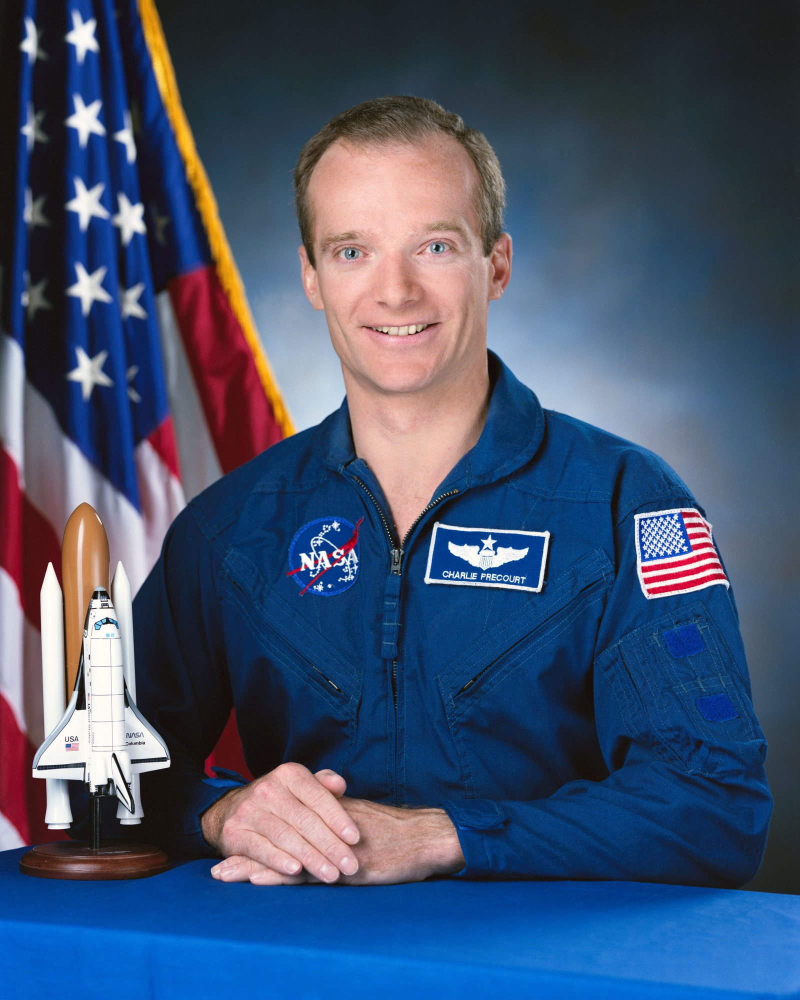
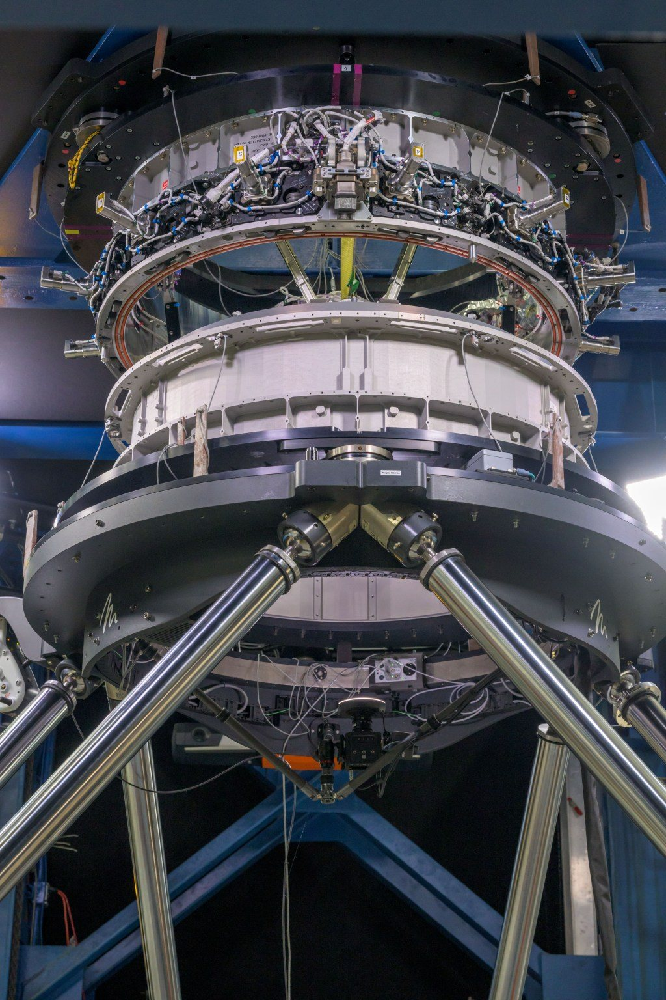
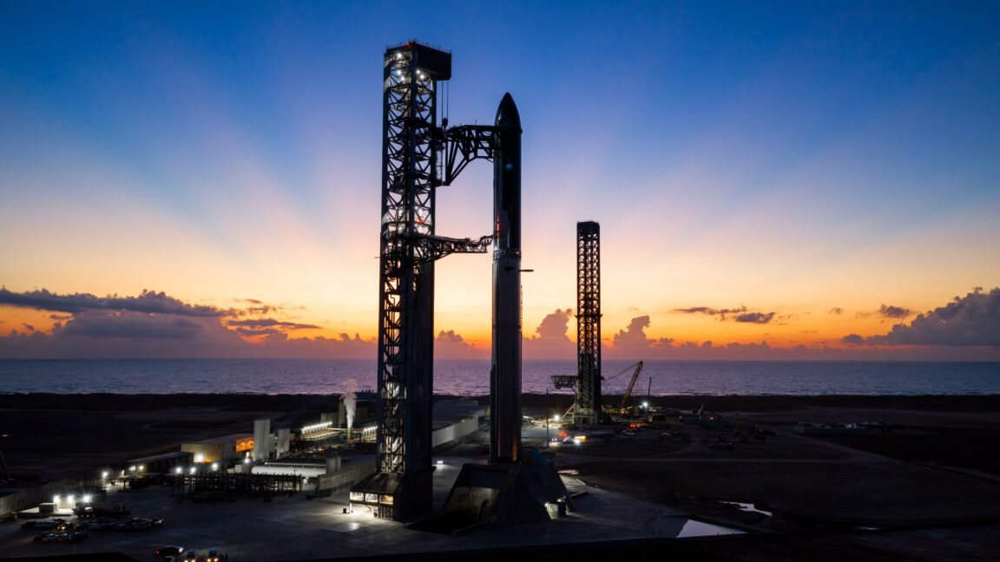

C’è un numero che la NASA custodisce con una certa gelosia da anni: quanti lanci di Starship servono per riempire di propellente, in orbita terrestre, il lander con cui SpaceX dovrà riportare esseri umani sulla Luna. Giovedì 22 ottobre, durante la riunione trimestrale dell’Aerospace Safety Advisory Panel, il comitato indipendente che vigila sulla sicurezza dei voli umani della NASA, quel numero è uscito quasi per caso: «circa 22». Nelle ore successive Elon Musk lo ha contestato pubblicamente su X, con una risposta di due frasi: «È decisamente troppo alto. Il numero reale sarà più come 6-8».
Cosa è stato detto alla riunione
Il pannello, istituito dal Congresso americano dopo l’incendio di Apollo 1 nel 1967, riferisce sia al Congresso sia alla NASA e una volta ogni tre mesi presenta in pubblico le proprie valutazioni. Questa volta gran parte della discussione ha riguardato il programma Artemis. Il membro che ha parlato del lander è Charlie Precourt, ex astronauta con quattro missioni Shuttle alle spalle, due delle quali da comandante.
«Per quanto riguarda Artemis IV abbiamo un gran numero di prime volte, che riducono la probabilità di successo della missione», ha detto Precourt. «Dobbiamo tenere d’occhio i numerosi rifornimenti necessari per il lander. Credo che l’ultima stima sia di circa 22 voli». Non ha nominato Starship, ma il riferimento è inequivocabile: dei due lander scelti dalla NASA per gli sbarchi con equipaggio, solo quello di SpaceX dipende dal rifornimento in orbita già dalla prima missione, mentre il Blue Moon di Blue Origin non lo prevede nella sua configurazione iniziale. Il pannello, che lavora a stretto contatto con i responsabili del programma, ha quasi certamente ottenuto la cifra dalla stessa NASA.
Eric Berger, giornalista di Ars Technica che seguiva la teleconferenza, ha riportato la frase su X poco prima delle 21 ora italiana. Musk gli ha risposto direttamente, liquidando la stima come esagerata.

Perché servono tanti lanci
Il problema nasce dalle dimensioni stesse di Starship. Il veicolo consuma quasi tutto il suo propellente solo per raggiungere l’orbita terrestre: arrivato lassù, non ha più abbastanza metano e ossigeno liquidi per proseguire verso la Luna, scendere sulla superficie e poi ripartire verso l’orbita lunare. La soluzione di SpaceX è una specie di distributore di carburante nello spazio.
Lo schema prevede prima il lancio di una Starship deposito, un grande serbatoio orbitante. Poi una serie di Starship cisterna partono una dopo l’altra, si agganciano al deposito e gli trasferiscono il propellente rimasto nei loro serbatoi. Quando il deposito è pieno, parte la Starship lunare, si aggancia, fa il pieno e solo allora si dirige verso la Luna. Ogni cisterna è un lancio completo, con il suo razzo, il suo conto alla rovescia e i suoi rischi. Per questo il numero conta così tanto: più lanci significa più tempo, più costi e più occasioni perché qualcosa vada storto prima ancora che gli astronauti lascino la Terra.
Quanti viaggi servono dipende soprattutto da due fattori. Il primo è quanto propellente ogni cisterna riesce a portare in orbita, cioè la capacità di carico di Starship. Il secondo è quanto se ne perde lungo la strada: metano e ossigeno sono conservati a temperature bassissime e una parte evapora lentamente mentre il deposito resta in attesa, mentre un’altra parte si perde a ogni trasferimento. Nessuno dei due valori è ancora stato misurato in volo, perché il trasferimento di propellenti criogenici tra due veicoli in orbita non è mai stato dimostrato.

Un numero che cambia da anni
La stima di 22 non arriva dal nulla, ma è la più alta mai circolata in modo così diretto. Nel 2023 l’allora responsabile del programma lander della NASA, Lisa Watson-Morgan, si era limitata a dire di avere «un’idea generale» senza volerla rivelare; più tardi aveva parlato di un intervallo fra «le cifre singole alte e le doppie cifre basse», cioè una dozzina di lanci circa. Altri funzionari avevano parlato di un numero fra quindici e diciannove. L’attesa, da sempre, era che SpaceX aumentasse in modo netto la capacità di carico di Starship, riducendo così i viaggi delle cisterne.
La nuova cifra suggerisce che dentro la NASA qualcuno non vede quel miglioramento arrivare abbastanza in fretta. L’agenzia, del resto, può fare il calcolo con la capacità che Starship dimostra oggi, mentre la stima di Musk presuppone un razzo più potente, la versione V3 su cui SpaceX conta proprio per le missioni lunari. Il divulgatore Tim Dodd ha fatto notare che, prendendo i suoi vecchi calcoli e abbassando il carico utile da 100 a 65 tonnellate per viaggio, un valore prudente per la V3, si ottengono proprio 22 rifornimenti.
Non è la prima volta che Musk contesta un numero del genere. Nel 2021, quando un documento del governo americano aveva ipotizzato 16 lanci, lo aveva definito «estremamente improbabile» e aveva indicato in otto il massimo di cisterne necessarie. La sua posizione, in sostanza, non è cambiata in cinque anni.

Il problema del calendario
Anche ammettendo che SpaceX raggiunga entro la fine del 2027 il ritmo di due lanci di Starship alla settimana, riempire un deposito con 22 voli richiederebbe circa tre mesi. Con 6-8 voli il tempo scenderebbe a un mese o poco più. È una differenza enorme per una missione che la NASA vuole far partire nel 2028.
Il piano attuale, ridisegnato dall’amministratore della NASA Jared Isaacman, prevede nel 2027 Artemis III, che non sbarcherà più sulla Luna ma resterà in orbita terrestre per provare l’aggancio con esemplari di prova dei due lander, la Starship HLS e il Blue Moon MK2. Il primo sbarco con equipaggio è affidato ad Artemis IV, nel 2028, al Polo Sud lunare. Isaacman vuole riportare gli americani sulla Luna prima della fine del mandato del presidente Trump, nel gennaio 2029, e prima della Cina.
Le tappe intermedie sono strette. Martedì 20 ottobre, davanti allo Space Studies Board delle Accademie nazionali, il dirigente NASA Kelvin Manning ha detto che SpaceX conta di dimostrare il trasferimento di propellente criogenico in orbita all’inizio del 2027 e di tentare lo sbarco senza equipaggio sulla Luna alla fine dello stesso anno. Intanto il programma di prova di Starship prosegue: il Flight 15 è atteso a metà novembre dalla seconda rampa di Starbase, mentre i veicoli del Flight 16 dovrebbero essere trasferiti in Florida per partire dal complesso 39A del Kennedy Space Center. A Starbase è stata pubblicata una restrizione dello spazio aereo per prove ad alta energia a partire dal 23 ottobre, segnale di un probabile test di accensione statica del Booster 22.
Le altre preoccupazioni del pannello
Il numero dei rifornimenti è solo una delle «prime volte» elencate da Precourt. Artemis IV sarà il primo sbarco umano dopo più di cinquant’anni, con veicoli completamente nuovi e in una regione, il Polo Sud, molto diversa da quelle equatoriali delle missioni Apollo: pendii ripidi, Sole basso sull’orizzonte, temperature estreme. Sarà anche la prima volta che propellenti criogenici vengono usati sulla superficie lunare, mentre Apollo usava combustibili ipergolici, conservabili a temperatura ambiente, e le possibilità di interrompere la missione in caso di problemi saranno più limitate.
Precourt ha anche osservato che la NASA chiede un solo sbarco di prova senza equipaggio, seguito da una riaccensione dei motori, ma non una dimostrazione completa del decollo dalla superficie e del ritorno in orbita lunare. Per questo il pannello aprirà a breve una raccomandazione formale: rivedere gli obiettivi e potenzialmente l’architettura di Artemis IV e delle missioni successive, con un piano dettagliato di prove a terra e in volo per ogni obiettivo, compresi i voli dimostrativi dei lander.
Non è una bocciatura. Precourt ha elogiato Isaacman e la sua squadra per gli sforzi nel rimuovere gli ostacoli sia per SpaceX sia per Blue Origin. Ma il messaggio è chiaro: il calendario è aggressivo e il successo dipende da tecnologie che nessuno ha ancora fatto volare. Chi ha ragione fra i 22 lanci e i 6-8 lo diranno i primi rifornimenti reali in orbita, attesi nel 2027. Venerdì 23 ottobre la NASA ha in programma un aggiornamento pubblico su Artemis, la prima occasione per capire se l’agenzia vorrà commentare la cifra.
Fonti pubbliche e tracce
Ultimo aggiornamento editoriale: 23 ottobre 2026, ore 9:40 (ora italiana). Nel corpo non si ripete la fonte a ogni frase: le tracce sono raccolte qui. Le citazioni sono tradotte dall’inglese; gli orari sono convertiti in ora italiana.
- Ars Technica, Eric Berger, 22 ottobre 2026: dichiarazioni di Charlie Precourt, risposta di Musk, stime precedenti di Lisa Watson-Morgan, tre mesi per riempire il deposito con due lanci a settimana, immagine SpaceX di Starship impilata.
- SpacePolicyOnline, Marcia Smith, 22 ottobre 2026: resoconto della riunione del pannello, prime volte di Artemis IV, intervento di Kelvin Manning, raccomandazione formale, calendario Artemis.
- Eric Berger su X, 22 ottobre 2026, ore 20:43 italiane: la frase di Precourt sui «circa 22» lanci; la risposta di Elon Musk, «That’s way too high. Actual number will be more like 6 to 8», è nel thread.
- Teslarati, 22 ottobre 2026: schema deposito e cisterne, evaporazione, precedente del 2021 con la stima di 16 lanci.
- TeslaNorth, 22 ottobre 2026: testo della risposta di Musk a Berger.
- Tim Dodd (Everyday Astronaut) su X, 23 ottobre 2026: calcolo con 65 tonnellate per viaggio.
- NASASpaceflight su X, 23 ottobre 2026: Flight 15 a metà novembre dalla seconda rampa, veicoli del Flight 16 verso il 39A; post del 22 ottobre sul Booster 22 e la restrizione dello spazio aereo.
Fotografie utilizzabili
Tre immagini sono libere: l’illustrazione della Starship HLS sulla Luna in copertina e il ritratto di Charles Precourt sono della NASA, la prova del sistema di aggancio è un’immagine SpaceX diffusa nel programma Artemis, tutte e tre in pubblico dominio su Wikimedia Commons. La foto di Starship impilata per il Flight 14 è materiale ufficiale SpaceX, usato con credito SpaceX · uso editoriale non commerciale. Dettagli in scheda dei crediti fotografici.
Apri il dossier su Starlink e United archiviato · Archivio Notizie · Torna a SpaceX